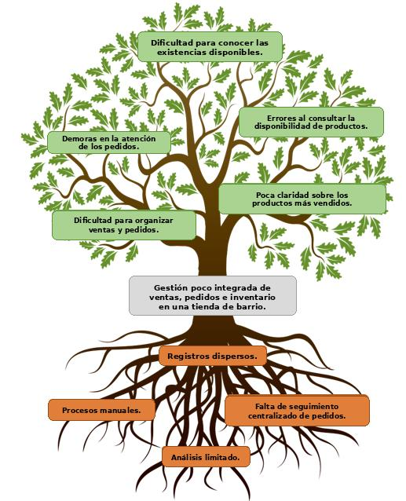

Facultad de Ingeniería, Tecnología en Desarrollo de Software,
Semestre VII
Walter Alberto Aspriella Castellar, Estefanía Burgos Alarcón, María José Rodríguez Rodríguez, Fabio García Ramírez, Javier Mendoza Beltrán, Lucía Margarita Mestre Tapia y Xavier José del Río Acosta.
Noviembre de 2026
Las tiendas de barrio cumplen una función fundamental en el abastecimiento cotidiano de las comunidades urbanas, ofreciendo alimentos, bebidas, artículos de aseo y bienes de consumo masivo con un alto nivel de proximidad física. Sin embargo, en la actualidad estos micronegocios enfrentan una severa pérdida de competitividad provocada por dos factores concurrentes: la rápida expansión de las cadenas de descuento duro (*hard discount*) y las plataformas corporativas de entrega a domicilio, sumado a la gestión empírica y manual de sus operaciones internas.
Tradicionalmente, el tendero administra su catálogo, compras, ventas y existencias de memoria o mediante anotaciones en cuadernos físicos. Esta fragmentación de la información ocasiona constantes inconsistencias en el inventario disponible, demoras significativas en la preparación y despacho de pedidos, errores en el cobro de productos y una incapacidad casi total para medir con rigor la rentabilidad real de sus líneas de negocio. Asimismo, los clientes demandan cada vez más canales digitales ágiles, catálogo interactivo y atención continua vía mensajería instantánea como WhatsApp.
Merkostore surge como una plataforma web integral diseñada para digitalizar, estructurar y optimizar las operaciones comerciales de una tienda de barrio. El sistema desacopla la interacción en dos entornos coordinados: una tienda pública reactiva para que los clientes exploren productos, reciban asesoría mediante inteligencia artificial y procesen órdenes con confirmación automática a WhatsApp, y un panel administrativo seguro para que el comerciante controle inventarios atómicos, sincronice precios, supervise pedidos en tiempo real y tome decisiones informadas mediante modelos de optimización matemática e inteligencia de negocios.
¿De qué manera una plataforma web Full-Stack integrada con inteligencia artificial conversacional, un modelo matemático de optimización de inventarios y un cuadro de mando analítico en Power BI permite fortalecer la gestión comercial, operativa y logística de una tienda de barrio en Cartagena?
A continuación se ilustra la estructura de causas raíz, problema central y efectos negativos identificados en el comercio minorista barrial:

El desarrollo del proyecto Merkostore se justifica plenamente en la necesidad de democratizar el acceso a herramientas de alta tecnología para el sector minorista tradicional de barrio, el cual representa cerca del 65% del comercio de la canasta familiar en Colombia pero exhibe los mayores índices de obsolescencia digital. La falta de centralización operativa genera pérdidas financieras silenciosas por mercancía vencida, quiebres de stock en artículos de alta rotación y fuga de clientes hacia almacenes de grandes superficies.
Una solución web moderna permite unificar en una única fuente de verdad los procesos de consulta de catálogo, toma de pedidos, control de caja y seguimiento de entregas. La plataforma Merkostore no solo reduce las tareas manuales y repetitivas del tendero, sino que transforma los datos operacionales capturados en valor estratégico. A través de la incorporación de un modelo de Programación Lineal Entera en Investigación de Operaciones y un Data Warehouse con dashboards en Power BI, el comerciante deja de decidir con base en la intuición y pasa a saber con certeza matemática qué productos ensamblar en combos promocionales, cuántas unidades reservar para la venta al detal y cuáles son sus márgenes reales de rentabilidad diaria.
Desarrollar, implementar y documentar Merkostore, un ecosistema tecnológico integral para tiendas de barrio que articule una plataforma web Full-Stack con asistente virtual inteligente (LLM), un modelo matemático de optimización lineal de inventarios y un almacén de datos dimensional con cuadros de mando en Power BI, mejorando la competitividad, rentabilidad y experiencia de compra.
dbdiagram.io, implementarlo físicamente en Microsoft Power BI Desktop con métricas analíticas en lenguaje DAX, y embeber el dashboard interactivo resultante en el panel administrativo de la aplicación.El marco de referencia consolida las investigaciones previas, fundamentos conceptuales, tecnologías de desarrollo y normativas jurídicas que soportan la construcción de Merkostore.
Gianella Fernández Maldonado (2017), en su investigación sobre el control interno y la gestión de inventarios en micro y pequeñas empresas comerciales en Perú, demostró cómo los procedimientos formalizados de supervisión de existencias reducen de manera drástica las pérdidas por deterioro, el desabastecimiento y los costos de almacenamiento. Su estudio concluyó que la automatización de los registros de entradas y salidas es una condición indispensable para asegurar la supervivencia de los micronegocios. Este antecedente fundamenta en Merkostore la implementación del control atómico de stock en MongoDB cada vez que se procesa una orden.
Apunte-García y Rodríguez-Piña (2016), en su trabajo sobre diseño e implementación de sistemas de gestión de inventarios para pymes comerciales ecuatorianas, abordaron los graves cuellos de botella generados por la carencia de plataformas informatizadas. La solución desarrollada evidenció que centralizar los catálogos y las órdenes en una base de datos unificada incrementa la velocidad de despacho en un 42% y facilita la toma de decisiones gerenciales.
Cepeda y Jiménez (2016) formularon un modelo de control óptimo para sistemas de inventarios incorporando variables dinámicas de precios, costos de penalización por desabastecimiento y comportamiento estocástico de la demanda. Dicho estudio evidenció que la gestión del inventario no se limita a contar artículos físicos, sino que exige modelos matemáticos determinísticos y heurísticos para maximizar el margen de utilidad neta.
La Universidad Católica de Pereira (2010) analizó la automatización de procesos de facturación y despacho en almacenes minoristas de Risaralda, demostrando que la sistematización de pedidos previene errores humanos de digitación y sincroniza la contabilidad en tiempo real. En Merkostore este principio se aplica mediante la validación del carrito desde el servidor antes de generar la orden de WhatsApp.
Osorio García (2021), en su investigación sobre modelos de inventario para pequeñas y medianas empresas en Colombia, examinó herramientas clásicas como la clasificación ABC de Pareto, los sistemas de revisión periódica y el cálculo del Punto de Reorden (ROP). Su trabajo resalta que los micronegocios deben equilibrar el costo de inmovilizar capital en bodega frente al riesgo de perder ventas, lo cual orientó la formulación matemática de Merkostore.
Rada Restrepo, Blanco Arroyo y Muñoz Caraballo (2017) desarrollaron una propuesta de sistema de control de inventarios para el sector comercial de Cartagena, evidenciando que más del 70% de los establecimientos locales operan sin sistemas digitales de seguimiento, dependiendo enteramente de cuadernos de notas o memoria del administrador. Los autores recalcaron la necesidad urgente de diseñar herramientas tecnológicas adaptadas a la idiosincrasia del comerciante de la costa caribeña, caracterizada por la alta rotación de productos de consumo diario y la comunicación continua vía mensajería móvil.
Java 21 representa el estándar empresarial de alto rendimiento con soporte a largo plazo (LTS). Spring Boot 3 provee un entorno robusto para la construcción de microservicios y APIs RESTful mediante inversión de control (IoC), inyección de dependencias y configuración no invasiva. La arquitectura se dividió en capas estrictas: controladores (Controllers), servicios de negocio (Services) y acceso a datos (Repositories).
MongoDB almacena la información en estructuras flexibles BSON/JSON. Esto resulta idóneo para el comercio minorista, permitiendo guardar artículos simples y combos compuestos con arreglos anidados sin la rigidez de esquemas relacionales complejos, garantizando lecturas atómicas de alta velocidad.
La seguridad del sistema opera bajo un esquema stateless (sin sesiones de servidor). Cada administrador se autentica en /api/v1/auth/login y recibe un token criptográfico JSON Web Token (JJWT 0.12.5) firmado digitalmente, protegiendo las contraseñas con el algoritmo de derivación de claves BCrypt y cerrando los endpoints administrativos contra accesos no autorizados.
Para enriquecer la experiencia de compra se integró el modelo fundacional Llama-3.1-8b-instant mediante la infraestructura de Groq Cloud. Para impedir alucinaciones de precios o artículos inexistentes, se implementó un patrón In-Context RAG: el backend inyecta en tiempo real en el System Prompt únicamente los productos con existencias en MongoDB, permitiendo al cliente consultar recetas y agregar ingredientes al carrito de forma inmediata.
La Investigación de Operaciones provee formalismos matemáticos para la resolución de dilemas de recursos escasos. El problema de ensamble de combos versus venta al detal se modela con variables de decisión enteras no negativas ($\mathbb{Z}_{\ge 0}$), maximizando la función objetivo de utilidad neta mediante algoritmos determinísticos de Ramificación y Acotamiento (*Branch & Bound*) y Simplex.
A diferencia de los modelos relacionales transaccionales (3FN), el modelado dimensional organiza la información en una tabla de hechos central (métricas numéricas de ventas) conectada radialmente a tablas de dimensiones (tiempo, producto, cliente, método de pago). Este modelo se carga en el motor columnar en memoria *VertiPaq* de Microsoft Power BI, permitiendo evaluar indicadores DAX a velocidades de milisegundos.
El software se enmarca en la normativa colombiana vigente: la Ley 1581 de 2012 de Protección de Datos Personales (garantizando confidencialidad en nombres, teléfonos y direcciones de clientes), la Ley 1480 de 2011 (Estatuto del Consumidor, asegurando transparencia en precios y especificaciones de catálogo) y el Artículo 333 de la Constitución Política que promueve la libre actividad económica y el fortalecimiento de microempresas.
El proyecto se fundamenta en un paradigma aplicado orientado a la resolución de un problema práctico de ingeniería. El enfoque es cuantitativo, sustentado en la medición de variables operacionales y financieras reales: precios de compra, costos de adquisición, existencias físicas, tiempos de entrega en minutos y márgenes netos calculados. La modalidad es descriptiva, analítica y propositiva.
Para la dirección del proyecto se adoptó el marco ágil Scrum, organizado en cuatro iteraciones incrementales (Sprints) de dos semanas cada una:
| Iteración | Objetivo Específico | Actividades Realizadas | Incremento de Software Entregado |
|---|---|---|---|
| Sprint 1 | Arquitectura y Backend | Configuración del proyecto Maven, conexión con MongoDB, capa de seguridad JWT y endpoints CRUD de productos y pedidos. | API REST funcional en Spring Boot 3 verificada con compilación exitosa (BUILD SUCCESS). |
| Sprint 2 | Frontend y Asistente IA | Diseño responsivo de la tienda cliente y panel admin, pasarela de órdenes a WhatsApp y conexión con la API de Groq (Llama-3.1). | SPA reactiva con agente conversacional MerkoBot y catálogo sincronizado. |
| Sprint 3 | Investigación de Operaciones | Formulación matemática del modelo PLE de combos, codificación del solver en Python estándar y módulo interactivo Simplex web. | Solución óptima $Z^* = \$ 600.520,00$ COP integrada con botón de sincronización al inventario. |
| Sprint 4 | Data Warehouse y Power BI | Diseño del esquema estrella en dbdiagram.io, pipeline ETL en Power Query, formulación de métricas DAX e integración embebida. | Data Warehouse físico en Power BI Desktop con 37 transacciones reales y visor embebido en la web. |
| Fase / Sprint | Actividad Principal | Duración | Estado |
|---|---|---|---|
| Fase 1: Análisis y Arquitectura | Definición de requerimientos, diseño de base de datos NoSQL y seguridad JWT. | 2 semanas | Completado (100%) |
| Fase 2: Desarrollo Web e IA | Construcción de Storefront, Panel Admin, chatbot Llama-3.1 y flujo WhatsApp. | 2 semanas | Completado (100%) |
| Fase 3: Optimización Lineal | Formulación de restricciones de inventario y mano de obra, algoritmo Branch & Bound. | 2 semanas | Completado (100%) |
| Fase 4: Analítica y Sustentación | Construcción del Data Warehouse, Dashboard en Power BI e informe metodológico. | 2 semanas | Completado (100%) |
El desarrollo del proyecto Merkostore alcanzó la totalidad de los objetivos específicos formulados, materializándose en un ecosistema tecnológico funcional y validado:
Se implementó una API REST en Spring Boot 3 con Java 21 estructurada en seis paquetes de responsabilidades desacopladas: controladores REST, capa de lógica de servicio, capa de persistencia en MongoDB Repository, modelos de entidad, DTOs de transferencia y filtros de seguridad.
/api/v1/admin/** restringido mediante tokens Bearer JWT firmados criptográficamente, garantizando inmunidad contra vulnerabilidades CSRF y secuestro de sesiones.BUILD SUCCESS (37 clases principales, 3 clases de pruebas, 0 errores).
Se integró de manera exitosa el modelo fundacional Llama-3.1-8b-instant mediante la infraestructura de ultra-baja latencia de Groq Cloud Inc. Para erradicar cualquier alucinación en artículos o precios, la clase ChatbotService.java aplica un patrón de arquitectura In-Context RAG:
stock > 0.Se formuló, programó y resolvió de forma determinística el modelo de optimización de mezcla de productos de Investigación de Operaciones, resolviendo el dilema del tendero entre vender al detal o armar combos promocionales familiares.
Variables de decisión: $x_1$ (Combos Familiares), $x_2$ (Combos Desayuno), $y_1$ a $y_5$ (Huevos, Café, Harina, Aceite y Azúcar al detal).
Función Objetivo:
$$\max Z = 13100\,x_1 + 9300\,x_2 + 9800\,y_1 + 6990\,y_2 + 1600\,y_3 + 5990\,y_4 + 3100\,y_5$$
Restricciones físicas y operativas: Stock de bodega (Huevos $\le 35$, Café $\le 20$, Harina $\le 50$, Aceite $\le 14$, Azúcar $\le 28$), mano de obra de empaque ($12x_1 + 8x_2 \le 480\text{ min}$) y demandas mínimas comerciales ($x_1 \ge 5, x_2 \ge 3, y_1 \ge 5, y_2 \ge 2, y_4 \ge 2$).
En cumplimiento con los requerimientos de la asignatura de Visualización de Datos II, se construyó el almacén analítico de datos y su cuadro de mando interactivo:
Fact_Ventas y cuatro tablas de dimensiones (Dim_Tiempo, Dim_Producto, Dim_Cliente, Dim_Metodo_Pago), todas conectadas con cardinalidad uno a muchos ($1:*$).<iframe> responsivo, permitiendo alternar filtros por categoría o canal en tiempo real y conectarse opcionalmente a enlaces de Power BI Service.En concordancia con las políticas institucionales sobre integridad académica, autoría y transparencia en la ingeniería, el equipo investigador declara explícitamente el rol de las herramientas de IA:
llama-3.1-8b-instant mediante Groq Cloud, operando bajo un esquema RAG liviano con inventario real de MongoDB y provisto de un mecanismo heurístico de contingencia (fallback) ante caídas de conexión externa.